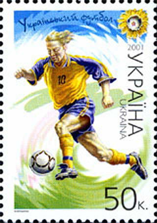
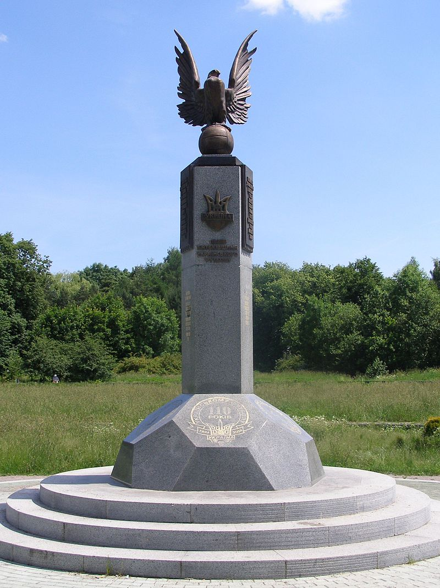
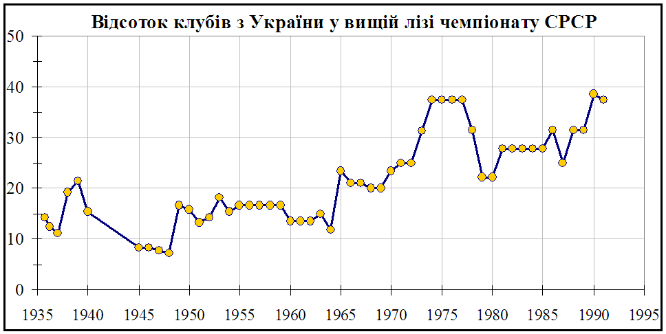

Футбол в Україні
Футбол — найпопулярніший вид спорту в Україні. Головним керівним органом українського футболу є Українська асоціація футболу (АУФ), що набула статусу національної асоціації у 1991 році.
Найбільшими досягненнями українського футболу за роки незалежності є, насамперед, перемога збірної України U-20 на чемпіонаті Світу 2019, вихід київського «Динамо» до півфіналу Ліги чемпіонів УЄФА у сезоні 1998/99, друге місце збірної U21 на чемпіонаті Європи 2006 серед молодіжних команд, перемога команди U19 на Євро 2009 U19, що проводилось в Донецьку та Маріуполі, участь національної збірної України у чемпіонаті світу 2006, де українці дійшли до 1/4 фіналу, здобуття разом з Польщею право на проведення Євро-2012 і Кубок УЄФА 2009, який завоював донецький «Шахтар», вихід "Дніпра" у фінал Ліги Європи 2015.
До заслуг українського футболу до 1991 року, у часи існування УРСР, можна включити два Кубка володарів Кубків УЄФА і Суперкубок Європи, здобуті київським «Динамо» в 1975 та 1986 роках. Крім того, до 1991 року багато українських футболістів виступали у складі збірної СРСР. Наприклад, у складі збірної СРСР, яка у 1988 році стала срібним призером Чемпіонату Європи, серед 20 гравців фінальної стадії турніру було 12 представників українського футболу.
 Марка України (2001): Український футболІсторія
Проникнення гри
Коріння цієї гри на території теперішньої України сягають кінця XIX століття і ведуть до Одеси. Одними з «Одеський британський атлетичний клуб» створено у 1878). У 1884 році в Одесі було збудоване перше футбольне поле, гру «foot-ball» іноземці популяризували серед місцевого населення.[1]У 1892 році в Одесі заснований німецький спортивній клуб «Турн-Ферайн» з секцією футболу. У 1899 році в Одесі заснована футбольна команда виключно з місцевих жителів . З того моменту кількість одеських футбольних команд тільки зростало: ОКФ (Одесский кружок футбола), ШК (Шереметьевский кружок спорта), «Вега», «Местран» та багато інших. Пізніше гра проникла до Західної України, де діяли осередки спортивного товариства «Сокіл» (складалось з поляків, українців, чехів). Перші правила футбольної гри надруковано у монографії «Гімнастичні ігри шкільної молоді», яку видав у 1891 році Едмунд Ценар — професор учительської семінарії у Львові. Федерація футболу України за матеріалами, наданими львівськими істориками спорту, постановила вважати гру, яка відбулася 14 перших гравців у футбол були англійські моряки в порту Одеси, які створили і найперші команди (ОБАК — липня 1894 року у Львові, першим документально зафіксованим футбольним матчем на території України.
1894 — перший документально зафіксований матч на території України
За даними обсерваторії Львівської політехніки 14 липня 1894 року денна температура становила +24 °C. У ті дні у Львові тривала Загальна крайова виставка, протягом якої відбувалися різноманітні конференції інженерів, літературознавців, гостям міста продемонстрували нову трамвайну лінію, що вела до Стрийського парку тощо. У рамках виставки на полі, що знаходилося у Стрийському парку, відбулася міжміська гра між командами, що представляли спортивно-гімнастичне товариство «Сокіл» — Львів проти Кракова. Матч розпочався 14 липня 1894 року о 17:00: господарі грали у білих футболках та сірих гімнастичних штанцях, а гості — у білих футболках та синіх штанцях. Поєдинок судив професор Виробек з Кракова. На стадіоні місткістю 10 000 глядачів зібралося близько 3 000 людей. Гра тривала 7 хвилин — до першого забитого гола. Цей м'яч провів другокурсник учительської гімназії Володимир Хомицький, який діяв на лівому боці поля. Тактики й стратегії у діях футболістів майже не було — головним завданням було проштовхнути м'яч повз воротаря у ворота. Стійками воріт служили два прапорці, увіткнуті у землю.
1900–1914
 Пам'ятний знак на місці першого в Україні футбольного матчу.Львів (Стрийськийпарк)
У Одеській футбольній лізі (створена у 1910) брали участь ОБАК (Одеський британський атлетичний клуб), ОКФ (Одеський кружок футболу), шереметьєвці, «Спортинг-Клуб», «Вега», «Індо», «Турн-Ферайн» (команда німецького спортивного товариства) і «Флорида». У 1900-х роках перші футбольні клуби виникають у багатьох містах України — ініціаторами є переважно молодь, студенти вищих шкіл. У багатьох містах першими гравцями були робітники та моряки з країн Європи. «Сокільський рух», започаткований чехами у середині XIX століття був причетний до розвитку гри у Києві. Перша команда — «Південь» (1902) складалася переважно із чехів. Згодом її перейменовано на «Сокіл». Одним з осередків київського футбольного руху був Політехнічний інститут, студенти якого створили команду «Політехніки» (1906). У 1911 році 6 київських клубів організували першу міську лігу: «Любителі спорту», Спортивно-Гімнастичний Кружок при Київському Політехнічному інституті, Кружок «Славія», Кружок «Спорт», Польське Гімнастичне Товариство та Кружок «Фенікс». Виграли турнір «Політехніки»,вони ж 1913 році під час Всеросійської олімпіади яка проходила у Києві, перемогли в показовому турнірі 4 (ще взяли участь «Спорт», «Любителі спорту», «Славія»). У Львові спудеї першої реальної школи утворили ФК «Слава», що згодом став предком клубу «Чарні» (1903), свою спортивну команду зробила четверта гімназія — КГС (Клуб Гімнастично-Спортовий, 1904). Цю команду через 3 роки перейменовано на «Поґонь» — у міжвоєнний період вона буде одним із флагманів польського футболу. Учні 3 та 6 гімназій створили команду «Лехія» (1905). У 1905 році вперше провели чемпіонат міста — перемогли «Чарні». У 1912 р. ОФЛ вступила у Всеросійський футбольний союз, а 20 жовтня 1913 р., перемігши у фінальному матчі збірну Санкт-Петербургу (4:2), збірна Одеси стала Чемпіоном Російської Імперії.У 1914 році представники футбольних ліг та спорттовариств і клубів створили Футбольний Союз Півдня Російської імперіікуди увійшли :Одеса ,Херсон ,Миколаїв ,Севастополь ,Донбас-ліга,Київ ,Харків ,Ростов/дон,Таганрог а в 1915 провели першість де перемогла Юзівка,що представляла Донбас-лігу. Першости у містах: Львів 1905-1914, Чернівці 1907-1914, Одеса 1910-1918. Київ 1911-1918, Харків 1912-1918, Галичини 1912-1914, Донбас- ліга 1913 - 1919.Катеринослав 1916-1918. Влітку 1914 в Одесі та Миколаєві зіграв 5 матчі "'Фенербахче"Стамбул.
1919–1939 (УРСР)
Осередками футбольного життя радянської частини України залишалися великі міста: Київ, Одеса, Дніпропетровськ, Сталіно. Найкращі команди грали у Харкові — тодішній столиці республіки. Організацію Всеукраїнської Першості 1921-1923 взяв на себе Всевобуч України і Криму, у 1923 створено Вищу Раду Фізкультури (згодом комітет) при якій 1932 утворено секцію футболу. Першість УРСР у1921,1922,1923,1924,1927,1928,1932,1934 роках виграли саме харків'яни. У 1931 першість вперше вибороли кияни,а 1935 Дніпропетровськ. Коли у 1924 було організовано всесоюзний турнір, то Україну представляв «Штурм» (Харків), який став переможцем змагань в Україні. У московських святі фізичної культури у півфіналі представник УСРР розгромив збірну Закавказької РСР — 4:0, а у фіналі на переграв команду РСФСР(Ленінграду )— 2:1. По завершенні змагань українці обіграли також збірну СРСР, а потім і Москву.Серед найкращих гравців 1920-х та 30-х рр. з першої столиці УРСР були футболісти збірної СРСР: Микола Кротов, Іван Привалов, Микола та Костянтин Фоміни та Олександр Бабкін. 1927 року засновано «Динамо» (Київ). Саме «Динамо» було єдиною українською командою у найвищій лізі першого чемпіонату СРСР 1936. «Динамівці» зайняли 2 місце. Одними з найкращих футболістів країни були воротар Антон Ідзковський, захисник Костянтин Фомін, нападники Костянтин Щегоцький і Віктор Шиловський. Але за чемпіонство боролися тільки сильні московські клуби («Динамо» та «Спартак»), а найвищим довоєнним показником киян залишилось віце-чемпіонство 1936.
1919–1939 (українські землі поза УРСР)
У багатонаціональному Львові було кілька сильних команд, кожна з який мала специфічну назву. Польські імена носили 2 найпотужніші клуби міста — «Поґонь» і «Чарні», які регулярно виступали у найвищій лізі. Сильною командою була і «Гасмонея», де грали євреї. Іншими провідними командами міста були «Лехія» і футбольна дружина спортового товариства «Україна». «Поґонь» провела всі 13 довоєнних турнірів вищої ліги, «Чарні» — 7, «Гасмонея» — 2 і «Лехія» — один. Всі галицькі команди виступали у чемпіонаті Львівської та Станіславської окружної ліги, переможець якої виходив до найвищої ліги. Серед нельвівських дружин варто згадати колективи: «Ревера» (Станиславів), «Юнак» (Дрогобич) та «Погонь» (Стрий) «Погонь» (Львів) 4 рази ставала чемпіоном Польщі (1922, 1923, 1925, 1926). До національної команди Польщі викликали кільканадцятьох гравців клуб, серед яких Спіридіона Альбанського, Яна Васевича, Юзефа Гарбеня, Мечислава Батша, але найбільшими «зірками» були Міхал Матіяс і Вацлав Кухар. У чемпіонські роки «Поґонь» клуб тренував австрійський спеціаліст Карл Фішер. У першому (та єдиному довоєнному) Кубку Польщі львівська «Спарта» дісталася до фіналу, де програла краківській «Віслі» (0:2). У розіграші Чаші президента Польщі 1938 перемогла збірна Львова у складі якої грали представники: "Погонь" ,РКС ,"Лехія" ,"Україна" Після вторгнення радянських військ у вересні 1939 усі клуби ліквідували, створивши натомість нові з «пролетарськими» назвами: «Динамо», «Спартак» та ін. Найсильніші команди Волині: ВКС (Військовий Клуб Спортивний), «Гасмонея» та «Сокіл» (усі — Рівне), ПКС та ВКС (Луцьк), ВКС (Ковель) у 1922-27 рр. грали у Люблінській окружній лізі, а з 1929 р. — у Волинській окружній лізі але на загальнопольському рівні успіхів не досягали. Центром закарпатського футболу був Ужгород. Найпопулярнішою командою краю став Спортивний Клуб «Русь», створений у 1925. Ця команда була постійним переможцем першості Закарпаття у 1929–1934 роках. СК «Русь» вигравав чемпіонати Словаччини у 1933 та 1936 роках і був одним з найвідоміших клубів країни. Команда однією з перших у світі почала літати на виїзні ігри на літаку, за що отримала назву «літаюча команда вчителів». Найвідомішими закарпатськими гравцями міжвоєнного періоду були воротар Олекса Бокшай і нападник Геза Калочаї. Бокшай, який у 1937 перейшов з «Русі» до празької «Спарти» став наступником легендарного голкіпера Франтішека Планічки і, окрім багатьох чемпіонських титулів у внутрішній першості, виграв Кубок Мітропи. Уродженець Берегового Калочаї грав у «Спарті» у 1932–1937 рр., був володарем Кубка Мітропи і виступав за збірні Чехословаччини та Угорщини.
1940–1961
Німецька окупація не заважала проводити футбольні матчі на заході України, де у 1942 році навіть організували суто українську лігу, що об'єднувала клуби усієї Галичини. Ще восени 1941 розіграно Чаша УЦК "Україна " у фіналі обіграла "Сян"Перемишль.У 1942, 1943 і 1944 рр. чемпіонами ставали відповідно «Україна» (Львів), «Скала» (Стрий) і «Ватра» (Дрогобич). В Києві влітку 1942 року провели турнір, де виступали угорські, німецькі та румунські військові частини й дві українські команди — «Рух» і «Старт» (або ж по-іншому «Хлібзавод», бо там працювало більшість гравців колективу). Найвідомішими іграми стали зустрічі «Старту» з командою «Флякельф», перша з яких закінчилась перемогою українців 5:1 і було проведено матч-реванш. Через 3 дні — 9 серпня 1942 року «Старт» вдруге переміг німців — 5:3. Після цієї зустрічі відбулися арешти та розстріли київських футболістів, а гра згодом отримала назву «Матч смерті». Характерною особливістю перших післявоєнних та 50-х років в українському футболі став прихід у найсильніші клуби великої кількості талантів із Закарпаття, серед яких: Ернест Юст, Дезидерій Товт, Михайло Коман, Василь Турянчик, Йожеф Сабо, Ференц Медвідь, Йожеф Беца. У 1930-х роках у вищій лізі СРСР регулярно грало лише «Динамо» (Київ). «Стахановець» із Сталіно (зараз — «Шахтар») провів у еліті сезони 1938–1941 і повоєнні 1949–1952. Від 1955-го клуб став постійним учасником найвищого дивізіону. Періодично у «вишці» з'являлися харківські команди «Локомотив» (1949,1950,1953 та 1954) і «Авангард» (1960–1963). До «сборной» футболістів «Динамо» чи «Стахановця» майже не викликали. Першим гравцем українського клубу, який вийшов у матчі за СРСР став Віктор Фомін у 1955 році. Лише кілька поєдинків зіграли Віктор Каневський (5 ігор) і Олег Макаров (1), а стабільним гравцем збірної з українських футболістів став тільки півзахисник київського «Динамо» Юрій Войнов — єдиний представник українських клубів на чемпіонаті світу 1958, де виступав Радянський Союз. У складі збірної він став чемпіоном Європи 1960 року. У 1954 «Динамо» вперше завоювало Кубок СРСР. З 1957 року головним футбольним функціонером у ЦК КПУ став Володимир Щербицький, з чиїм іменем будуть тісно пов'язані успіхи та вплив найсильнішого в УРСР футбольного клубу «Динамо» (Київ). У 1961 році вперше у історії чемпіонатів Радянського Союзу переможцем стала команда з-поза Москви — київське «Динамо». Того ж року Кубок здобув «Шахтар» (Сталіно). Український футбол ставав дедалі помітнішим на всерадянській арені.
1962–1975
У 1960–1963 рр. у вищій лізі виступав харківський «Авангард». На чемпіонаті світу 1962 року за збірну СРСР у нападі грав київський «динамівець» Віктор Каневський. «Динамо» (Київ) під керівництвом Віктора Маслова 1966–1968 роках повторило рекорд ЦСКА (Москва) перемігши у 3 чемпіонатах СРСР поспіль. У 1966 році відрив киян від «срібного» призера, ростовського СКА досяг 9 очок (тоді давали 2 очки за перемогу). Найкращим футболістом країни 1966 назвали півзахисника «Динамо» Андрія Бібу. На англійському чемпіонаті світу 1966 основним гравцем основи був Йожеф Сабо, а Валерій Поркуян, Віктор Серебряніков та Леонід Островський з'являлися на полі лише у деяких іграх. Радянський Союз дістався до півфіналу — досягнення, яке збірній вже не вдасться повторити чи перевершити. У 1969 році Кубок СРСР здобуває «Карпати» (Львів).У 1972 році Чемпіоном СРСР стає ворошиловоградська «Зоря», а у 1974 році всесоюзну «бронзу» виграє тільки що повернувшийся з Першої ліги одеський «Чорноморець». У період від 1965 до 1975 року «Динамо» (Київ) тільки 1 раз опускалося нижче від 2-го місця в першості СРСР (7 позиція у 1970), підсумок тих 11 сезонів: 6 чемпіонств і 4 віце-чемпіонства. Коли закінчили виступи головні «зірки» московських клубів 1960-х років: Валерій Воронін, Едуард Стрєльцов та Валентин Іванов з «Торпедо»; Альберт Шестерньов і Володимир Пономарьов (ЦСКА); Галімзян Хусаїнов («Спартак»); «динамівці» Ігор Численко та Лев Яшин, то відсоток гравців у національній збірній СРСР з Києва збільшився. Серед 14 учасників ЧЄ 1972 (віце-чемпіонство) 6 гравців представляли клуби УРСР — «Динамо», «Шахтар», «Зорю» і «Карпати». Того року чемпіонат сенсаційно виграла «Зоря» (Ворошиловград) — вперше це зробила команда не із столиці якоїсь із радянських республік, а зі звичайного обласного центру. «Динамо» було другим, а 6-е місце посів новачок «вишки» «Дніпро», де наставником працював молодий тренер Валерій Лобановський. Колишній нападник київського «Динамо» повертається до Києва і з динамівського колективу ліпить сильну навіть за європейськими мірками команду. «Динамо» здобуває Кубок володарів кубків і Суперкубок УЄФА 1975. «Золотий м'яч» найкращому гравцю Європи від «Франс футболу» отримує нападник киян Олег Блохін. Лобановського призначають наставником «сборной». Блохіна визнавали найкращим футболістом України у 1972, 1973, 1974, 1975, 1976, 1977, 1978, 1980 і 1981 роках та найсильнішим гравцем СРСР у 1972, 1973 та 1974 роках.
1976–1991
 До війни в еліті радянського футболу грало тільки «Динамо» (Київ).З 50-х років до нього приєднався «Шахтар» (Донецьк).
Потім у вищій лізі закріпились «Чорноморець», «Металіст» і «Дніпро».
У 1974–1977 роках серед 16 учасників вищої ліги чемпіонату СРСР було 6 команд з УРСР, тобто — 37,5%. Це був найвищий показник за всі роки існування чемпіонату. Вища частка буде лише у першості 1990, коли від участі у чемпіонаті відмовляться клуби Прибалтики та Грузії. «Динамо» (Київ) ставало чемпіоном у 1977, 1980, 1981, 1985, 1986, 1990 роках. У 1979 році віце-чемпіоном країни стає донецький «Шахтар», а найкращим бомбардиром та гравцем року є нападник Віталій Старухін. Після стабільних успіхів київських «динамівців» Валерія Лобановського знову призначили тренером національної збірної СРСР (1982–1983 й 1986–1990). На початку 1980-х у Дніпропетровську зібрався колектив футболістів, який почав боротьбу за медалі у радянських першостях — Сергій Краковський, Микола Павлов, Геннадій Литовченко, Олег Таран та Олег Протасов. «Дніпро» виграв першість Союзу у 1983 (під керівництвом Володимира Ємця) і 1988 (під керівництвом Євгена Кучеревського). 1984 року найкращим футболістом країни назвали Геннадія Литовченка, у 1987 — Олега Протасова. Протасов встановлює рекорд результативності сезону 1985 — 35 голів, отримав «Срібний бутс». Цей результат (35 голів за сезон) став найкращим у всіх першостях СРСР. Олег Блохін входить у лідери за кількістю матчів, голів як за «Динамо» так і за збірну СРСР. Київське «Динамо» виграло Кубок володарів кубків 1986, а на чемпіонаті світу у Мексиці 1986 року у складі команди СРСР було 12 «динамівців» та 3 «дніпровці». «Франс футбол» визнав Ігоря Бєланова найкращим гравцем Європи 1986. Склад київського «Динамо» зразку 1985–1988 років з повним правом можна вважати «золотим» складом як самої команди, так і збірної СРСР. Його становили Віктор Чанов, Сергій Балтача, Володимир Безсонов, Анатолій Дем'яненко, Олег Кузнецов, Андрій Баль, Олексій Михайличенко, Василь Рац, Іван Яремчук, Павло Яковенко, Олександр Заваров, Ігор Бєланов, Олег Блохін, Вадим Євтушенко. Київських «динамівців» — підопічних Лобановського, називають найкращими футболістами СРСР: Анатолія Дем'яненка (1985), Олександра Заварова (1986), Олексія Михайличенка (1988). На чемпіонаті Європи у ФРН 1988 року у складі збірної СРСР було 11 «динамівців» та 1 «дніпровець».
З 1991 року
Федерацію футболу України створили у 1991 році. Першим президентом ФФУ став Віктор Банніков. Наступного року організація стала членом ФІФА та УЄФА, але жеребкування відбору до чемпіонату світу 1994 відбулося перед цим. Новостворені пострадянські федерації (окрім російської) до початку кваліфікацій до чемпіонату Європи 1996 грали тільки у товариських зустрічах. Чимало гравців провело кілька напівофіційних ігор за Україну, але потім виступало за Росію (наприклад, Олег Саленко — найкращий бомбардир ЧС 1994, Юрій Нікіфоров, Ілля Цимбалар). Чимало сильних гравців повиїжджало за кордон, від колишньої радянської система підготовки юних гравців залишилося дуже мало. Першим чемпіоном України стала сімферопольська «Таврія», яка перемогла у вирішальній грі «Динамо» (Київ). Першим Володарем Кубка України став одеський "Чорноморець", який переграв у фіналі у додатковий час харківський "Металіст" 1:0. Збірну формували на основі "Динамо", "Чорноморця", "Дніпра", куди лише в 1996-у, після шести років праці на Близькому Сході, повернувся Валерій Лобановський. Він зробив ряд футболістів зірками світового класу, які невдовзі перейшли грати до закордонних клубів (Андрій Шевченко, Олег Лужний, Каха Каладзе, Сергій Ребров). У 2004 році український легіонер «Мілана» (Італія) Андрій Шевченко виграв «Золотий м'яч» — приз найкращому футболістові Європи. . Сильнішав клубний футбол — прийшовши на пост президента «Шахтаря» (Донецьк) мільярдер Рінат Ахметов завдяки вдалим капіталовкладенням зробив донецьку команду рівним суперником для київського «Динамо». Збірна України у 1997–2001 роках тричі поспіль не потрапляла на міжнародні чемпіонати через поразки у вирішальному плей-оф. Першим серйозним турніром, куди потрапила національна команда, став чемпіонат світу 2006. Наставник «синьо-жовтих» Олег Блохін ще за тур до кінця забезпечив упевнене перше місце у відбірковій групі, де суперниками українців були збірні Туреччини, Греції та Данії. На самому чемпіонаті Україна сенсаційно дійшла аж до 1/4 фіналу. За підсумками 2006 року Олег Блохін потрапив до списку 10 найкращих тренерів світу. 20.05.2009 р. донецький «Шахтар» став володарем Кубка УЄФА, у фіналі вигравши у німецького «Вердера» (2:1)[4]. У сезоні 2008/09 українські клуби встановили власний історичний рекорд за набраними очками у таблиці коефіцієнтів УЄФА, увійшовши до першої п'ятірки Європи.[2] У 2015 році «Дніпро», під керівництвом Мирона Маркевича, сенсаційно вийшов у фінал Ліги Європи, поступившись у ньому «Севільї» з рахунком 2:3.